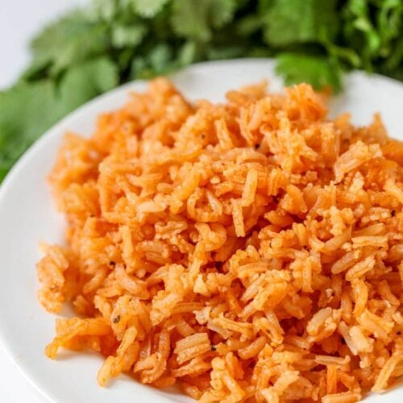

Spanish Rice

Spanish Rice - a rich and filling side dish
nuff said!
Ingredients
- 2 cups long grain rice
- 1/8 cup vegetable oil
- 8oz tomato sauce
- 6 stems cilantro (optional)
- 1 tsp salt
- 1 tsp minced garlic
- 4 cups chicken stock
- dash of cumin
- dash garlic pepper
Instructions
- Heat oil in large frying pan on medium heat
- Add rice and cook until golden brown
- When rice is browned add chicken stock, tomato sauce, salt, garlic,
cumin, and garlic pepper to pan
- Stir and cover pan. Let simmer for 30-40min or until all is cooked
and there is no liquid left. Fluff before serving.